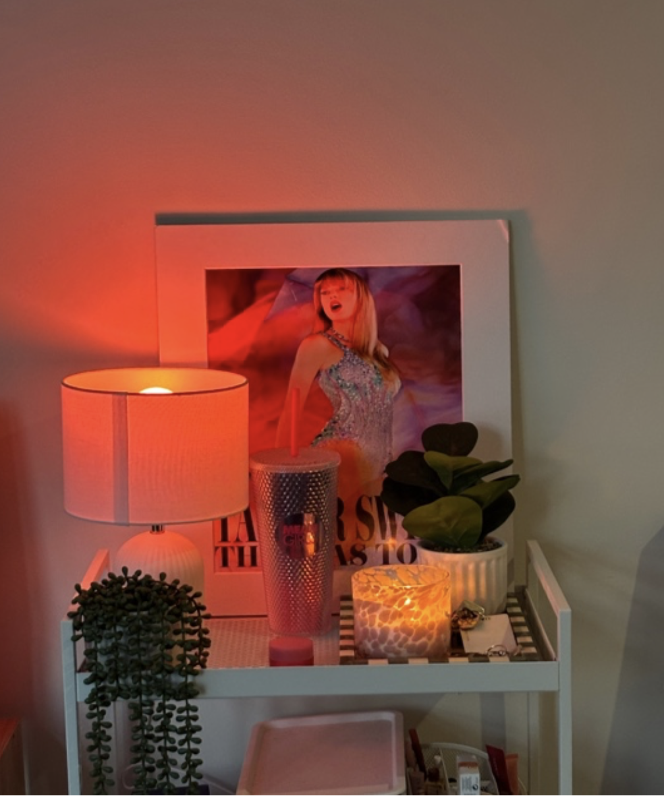

Private / Reflective
Inside
Inside explores quiet interior moments, personal spaces, light, mood and memory. This section focuses on the private and reflective side of the project.
The interior images focus on controlled light, intimate details and emotional atmosphere.
Explore Gallery